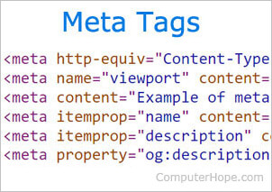
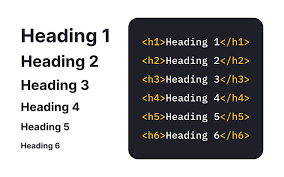
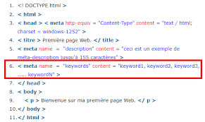

Что такое SEO?

SEO (Search Engine Optimization) — это системный процесс улучшения сайта для того, чтобы он лучше индексировался поисковыми системами и занимал более высокие позиции в результатах поиска. Главная цель SEO — увеличить количество и качество органического трафика.
По данным BrightEdge, более 53% всего веб-трафика приходится именно на органический поиск, что делает SEO ключевым каналом интернет-маркетинга.
Ключевые элементы SEO
Мета-теги
Мета-теги — это сигналы для поисковых систем. Самые важные:
- <title> — заголовок страницы, который отображается в поисковой выдаче.
- <meta description> — краткое описание страницы, влияющее на CTR.
- <meta robots> — указывает поисковикам, можно ли индексировать страницу.
Заголовки (H1–H6)
Заголовки формируют иерархию текста. Правильное использование H1–H6 помогает поисковым системам понимать структуру контента, а пользователям — быстрее находить нужную информацию.
Ключевые слова
Подбор и распределение ключевых слов — фундаментальная часть SEO. Используются:
- Основные ключевые слова (главные запросы).
- Второстепенные ключи (вариации и LSI).
- Длиннохвостые запросы (long-tail), которые приводят более целевых посетителей.
Почему SEO важно для бизнеса?
SEO — это инвестиция в долгосрочный успех бизнеса. Его преимущества:
- Рост органического трафика без постоянных расходов на рекламу.
- Формирование доверия к бренду за счёт высоких позиций.
- Увеличение конверсий за счёт качественного целевого трафика.
- Повышение конкурентоспособности.
Техническое SEO
Техническое SEO обеспечивает корректную работу сайта с точки зрения индексации и удобства для поисковых систем.
| Фактор | Описание | Инструменты |
|---|---|---|
| Скорость загрузки | Время ответа сайта влияет на ранжирование. | PageSpeed Insights |
| Мобильная адаптивность | Google использует Mobile-First Indexing. | Mobile-Friendly Test |
| Файл robots.txt | Управляет доступом поисковиков к страницам. | Google Docs |
Off-Page SEO
Off-Page SEO связано с факторами за пределами сайта: ссылки, упоминания бренда, социальные сигналы.
Наиболее важен ссылочный профиль: качественные внешние ссылки увеличивают авторитет домена. Google учитывает E-E-A-T (опыт, экспертность, авторитетность, надёжность). Подробнее в Google Search Quality Guidelines.
Локальное SEO
Для бизнеса с физическим присутствием (рестораны, магазины, сервисы) важно локальное SEO:
- Создание и оптимизация профиля Google Business Profile.
- Оптимизация карт (Google Maps, Яндекс Карты).
- Работа с отзывами и рейтингами.
Инструменты и аналитика
Для анализа и оптимизации SEO применяются специальные инструменты: